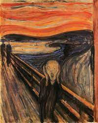

Resize the browser window. When the width of this document is 600 pixels or less, the background-color is "lightblue", otherwise it is "lightgreen".
I am red
I am blue
I am big
I am purple
I am small
This is a paragraph.
This text is bold.
This text is important!
This text is italic.
This text is emphasized.
This is some smaller text.
Do not forget to buy milk today.
My favorite color is blue red.
My favorite color is blue red.
This is subscripted text.
This is superscripted text.
Here is a quote from WWF's website:
For 60 years, WWF has worked to help people and nature thrive. As the world's leading conservation organization, WWF works in nearly 100 countries. At every level, we collaborate with people around the world to develop and deliver innovative solutions that protect communities, wildlife, and the places in which they live.
Browsers usually insert quotation marks around the q element.
WWF's goal is to: Build a future where people live in harmony with nature.
The WHO was founded in 1948.
The Html was founded in 1948.
The google was founded in 1948.
Marking up abbreviations can give useful information to browsers, translation systems and search-engines.
The HTML address element defines contact information (author/owner) of a document or article.
Written by John Doe.If your browser supports bi-directional override (bdo), the next line will be written from right to left (rtl):
This line will be written from right to leftThe HTML cite element defines the title of a work.
Browsers usually display cite elements in italic.
The Scream by Edvard Munch. Painted in 1893.